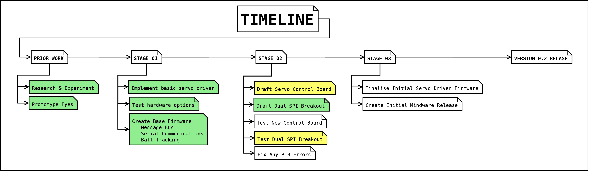
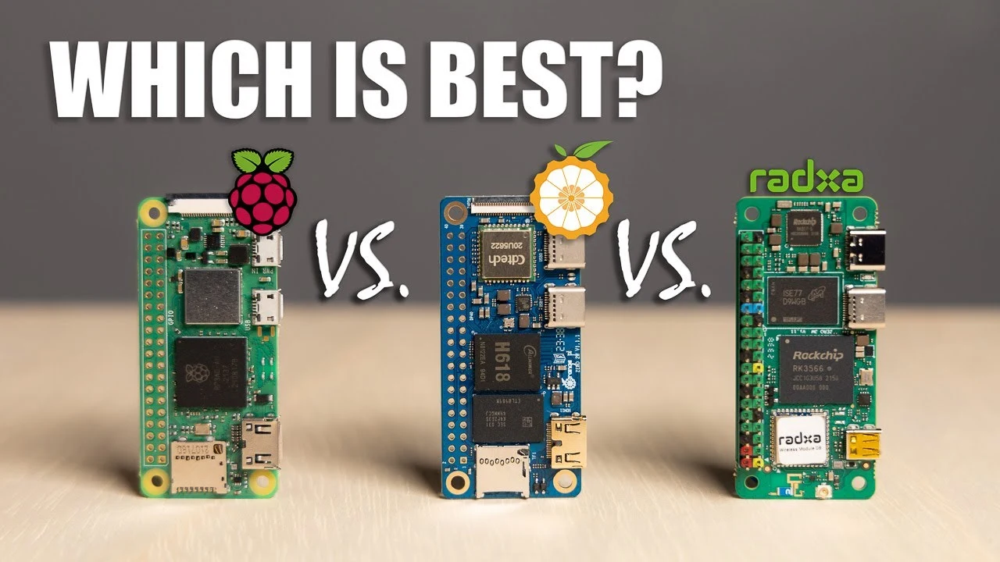
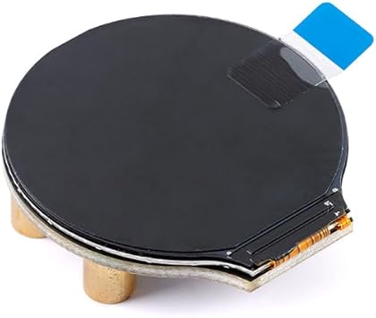
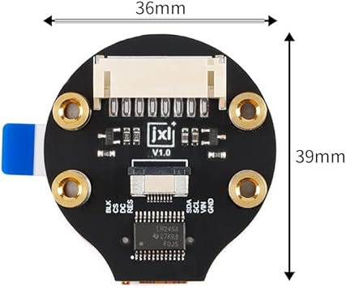
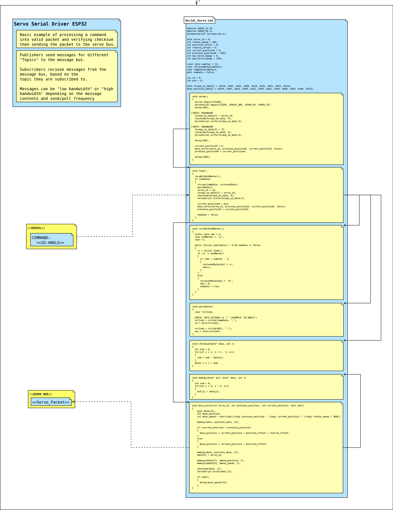

What is this Project?
This project is where I apply new knowledge in order to develop a complete robotics platform using the generation 1 Robis as a chasis. This will allow me to expand into building completely new robots and hardware. This also serves as a platform for me to try new AI architectures and research robot embodiment.

This project has kicked off after a period of learning all I could about these robots and similar robots from japan, since enrolling in a computer science degree, this project and robot will serve as an additional learning aid where I can implement what I have learned to create a complete robotics project.
In addition to new software, this mod adds a range of new sensors, custom control boards and lively LCD eyes. I will eventually make the new driver board compatible with a range of servo brands to allow building from scratch with more available robotics servos. By working with the restraint of such a small robot, I can focus on smaller components and create a board that can be used in a larger viariety of diy bots.
Visit the Repository
Currently I am working on a new microcrontroller and tidying up some wiring before expanding the basic software I've built.

The Initial goals?
The initial goal is to create the new hardware and get the robot back to a fully operational state with new software.

Initial Prototyping
I started by creating an upgrade for the eyes that use round LCDs to allow further expression, these tie into a SBC, initially I started with a Raspberry Pi Zero 2w however the limited ram created issues. The current SBC is the Orangepi Zero 2w 4GB, optimally I'd like to use a 8GB or 16GB Radxa Zero but for the sake of development cost, the Orangepi will do.

I started by using breakout boards and salvaged parts I had lying around. Got the eyes working but I need to implement frame buffers to improve framerate. In future I want to make a programto easily configure the visuals and calibrate offsets but that can wait until more final hardware is attained.


The LCDS used have been specifically selected for thier SPI connectors and thinness, I removed the 8 pin JST SH connector to thin the module more. This allows me to reduce bulk in such a confined area. It also helps longegevity as the ribbon cables can flex much easier and strain the conectors less.
https://www.amazon.com.au/JESSINIE-Display-Module-Circular-Interface/dp/B0CB3V1366{kind=link}

{kind=link}

Prototyping New Hardware
The first ting I needed to overcome was to talk to the SBUS servos, they arent common however are basically the exact same as the RS304md servos from Futaba. A blog site I follow has helped out a lot with this: The image below is of custom toolset I made to start working with the servos, It can use an ESP32 or a usb TTL adapter.

This is where I finally learned that I can directly send short command packets to the servos, I had previosly been fixated on sending long packets however this was not a wise use of my time and will be better figured out in the later software side. The servos function fine while daisy chained however this introduces the problem of how to talk to all the servos at once without spamming messages through the bus. My current plan is to use 5 PIO pins on a RP2350,to control each limb independently without creating congestion on the bus network, This gives me a balance between congestion and control by allowing each limb to be prioritised when needed without spamming commands. This doesnt eliminate the spam but reduces it greatly while allowing better control directing it where it needs to go.


{kind=link}

Here I do some basic testing with all the servos, I also did a test of head tracking a circle which I will find the footage for. This was a bit milestone for me as I had spent so much time learning about communication protocols, signal integrity and programming structure/flow.

Initial Hardware Revision and consolidation
This is the first tests with a custom PCB I designed after prototyping with SPI flex connector breakout. Alongside a new cooling shroud design using an 18mm fan and copper heatsinks. Additionally there is a small audio amplifier and custom RP2350 driver board using PIO pins for servo communication.


What Tools Do I Use?
To Be Concluded
Developing a new Controller Board
To Be Concluded
Designing the software stack
To Be Concluded
A sense of balance IMUs and PIDs
To Be Concluded
Poses, Walk and Talk
To Be Concluded
Neural Networks, Machine Learning and Realtime Machine Minds
To Be Concluded
Memory, Senses and Developing Experiences
To Be Concluded
Modelling the World and Interactions
To Be Concluded
Hardware Review and Tally
To Be Concluded
Experiments and Research
To Be Concluded
Future Direction
To Be Concluded
Resources
To Be Concluded